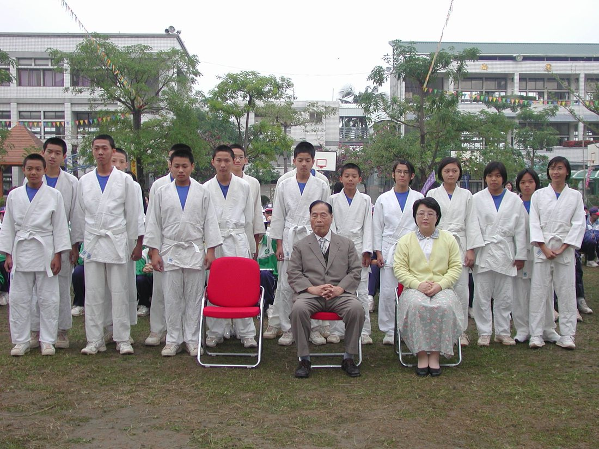
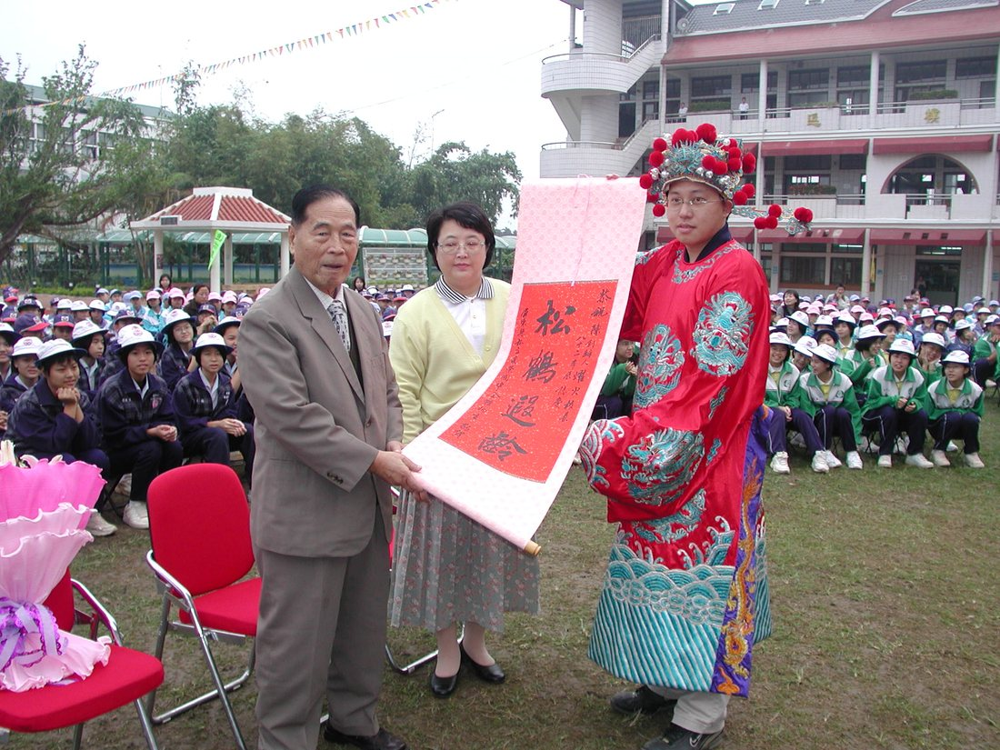
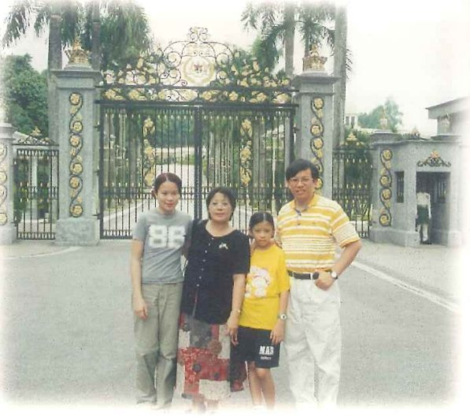
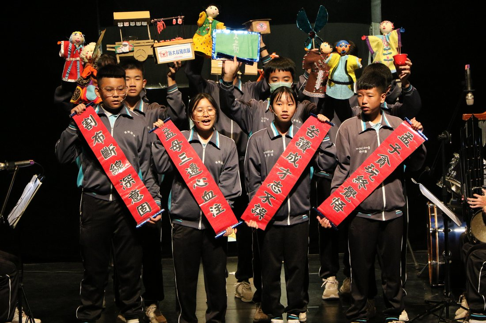
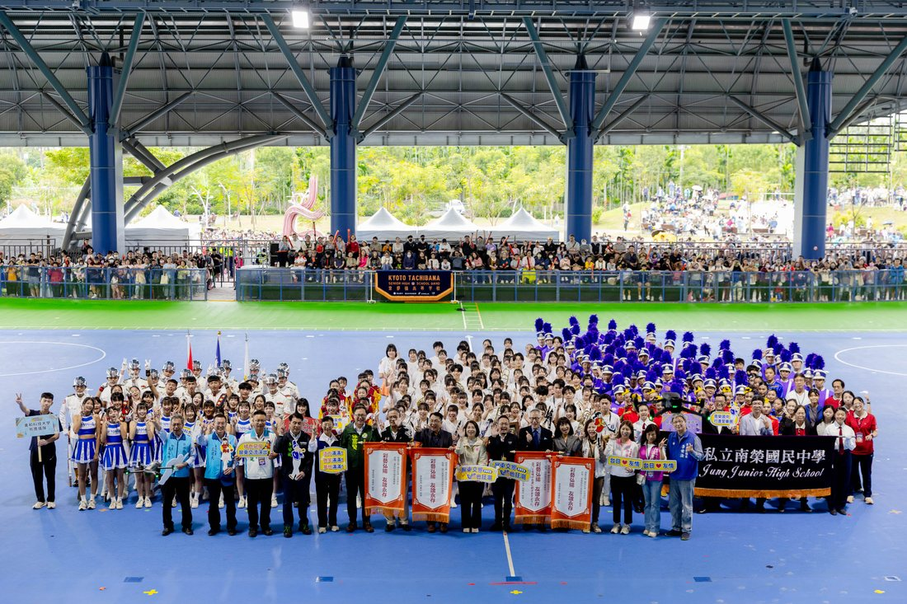
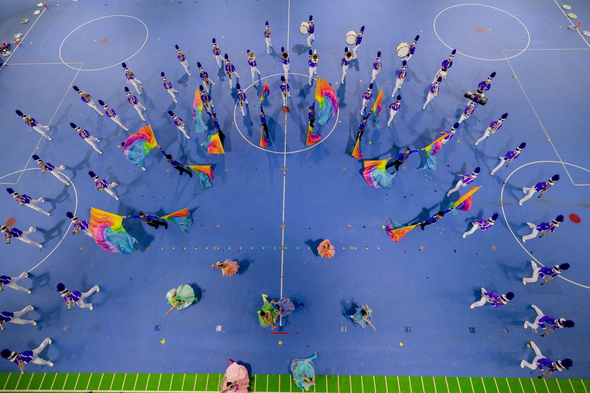
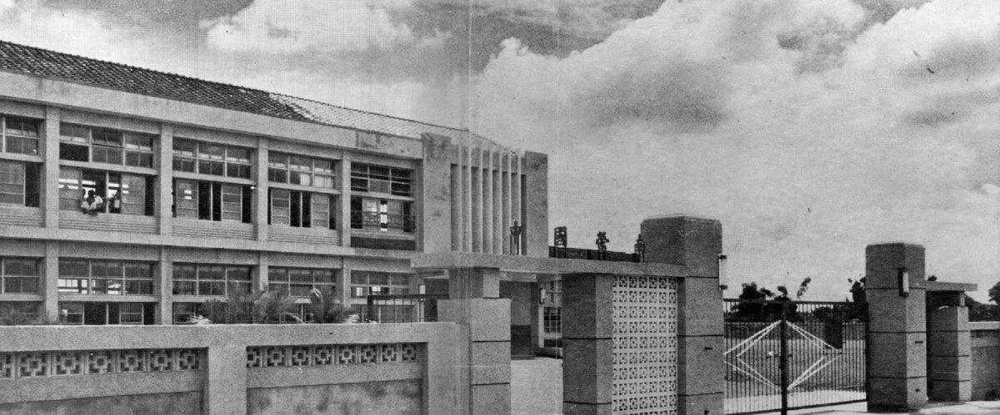
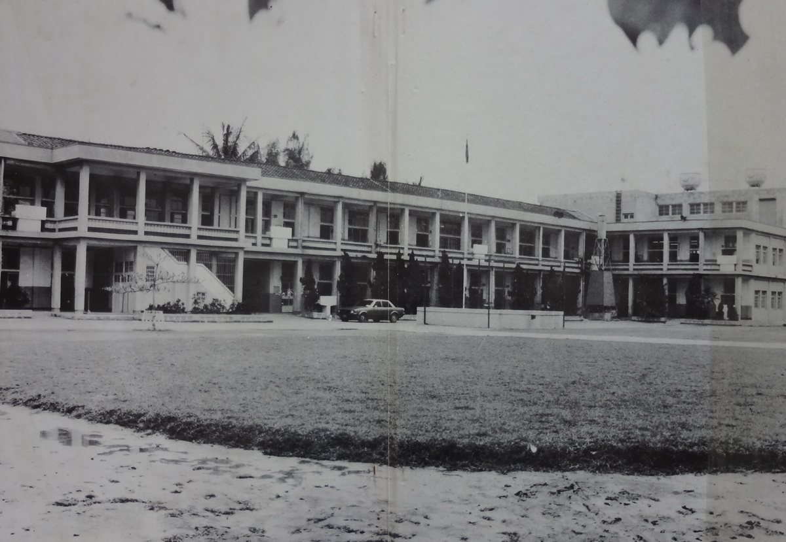

Since 1966

The Founder創立者창립자
Chen Yao-huo studied as a young man in Japan — at Toyokuni Gakuen in Kyushu — and later read economics at National Taiwan University, before giving his life to teaching.
In 1966, in his mid-forties, he passed over the prosperous city of Pingtung and founded his school in the small farming township of Kanding instead — to "open up educational wilderness" where help was needed most. For forty years he poured himself into the school, even mortgaging and selling family property to keep it running, and was honored with the nation's highest award for private education.
陳耀火先生は若き日に日本・九州の豊国学園で学び、のちに国立台湾大学で経済学を修めてから、生涯を教育に捧げました。
1966年、四十代半ばのとき、繁栄する屏東市ではなく、小さな農村・崁頂郷に学校を創りました。最も助けを必要とする地で「教育の荒野を切り拓く」ためです。40年にわたり学校に身を捧げ、家屋敷を抵当に入れ、売り払ってまで学校を支え、私学教育における国家最高の栄誉を受けました。
천야오훠(陳耀火) 창립자는 젊은 시절 일본 규슈의 도요쿠니 학원(豊国学園)에서 수학한 뒤, 국립대만대학교에서 경제학을 전공하고 이후 평생을 교육에 바쳤습니다.
1966년, 40대 중반의 나이에 그는 번영한 핑둥(현) 시내 대신 작은 농촌 마을인 간딩향을 선택해 학교를 세웠습니다. 가장 도움이 필요한 곳에서 "교육의 황무지를 개척"하기 위해서였습니다. 그는 40년 동안 학교에 헌신했으며, 학교 운영을 위해 가족 재산을 저당 잡히고 매각하기까지 했고, 사립 교육 부문 국가 최고 영예를 수상했습니다.
"If you are going to build a school, build it where no one else is willing to."「学校をつくるなら、誰もやりたがらない場所でつくりなさい。」"학교를 세우려거든, 아무도 세우려 하지 않는 곳에 세우십시오."— Chen Yao-huo, to his teacher in Japan— 陳耀火、日本の恩師への言葉— 천야오훠, 일본인 은사에게 남긴 말
Six Decades60年の歩み60년의 발자취
In the pioneering spirit, Chen Yao-huo founds Nan Jung in the quiet farming township of Kanding — passing over the larger, busier towns nearby.開拓者の精神で、陳耀火先生が近隣の大きな町ではなく、静かな農村・崁頂に南榮を創立。개척 정신으로 천야오훠는 인근의 크고 번화한 마을들 대신 조용한 농촌 마을 간딩에 난룽을 창립했습니다.
As Taiwan rolls out nine-year compulsory education, Nan Jung is appointed to serve its township as a "substitute" public school — a role it still fulfils today.台湾の九年国民教育の実施にあたり、地域の義務教育を担う「代用国中」に任命される。その役割は今も続いています。대만이 9년 국민의무교육을 시행하면서, 난룽은 지역의 "대용국중(代用國中)"으로 지정되어 공교육을 담당하게 되었으며, 이 역할은 오늘날까지 이어지고 있습니다.
Exchanges begin with Toyokuni Gakuen — the founder's own alma mater in Kyushu — with mutual visits every two years.創立者の母校・九州の豊国学園との交流が始まり、2年ごとに相互訪問。창립자의 모교인 규슈의 도요쿠니 학원과 교류가 시작되어, 2년마다 상호 방문이 이루어지고 있습니다.
The school's signature outdoor marching band is formed, growing into a national champion many times over.学校の象徴である屋外マーチングバンドが結成され、全国大会の常勝校へ。학교의 상징인 야외 행진 관악대가 창단되어, 이후 전국대회 우승을 여러 차례 차지하는 명문 악단으로 성장했습니다.
Led by Yuji Arai, students and teachers of Sakura High School and Tokyo International Gakuen formalize a sister-school bond — renewed by a visit every spring since.荒井裕司学園長率いる櫻花高校・東京国際学園と姉妹校を締結。以来、毎春の来訪で友情を新たに。아라이 유지 학원장의 주도로 사쿠라 국제고등학교 및 도쿄 국제학원의 학생·교사들과 자매결연을 맺었으며, 이후 매년 봄 방문을 통해 우정을 이어가고 있습니다.
With support from the Kings Car Education Foundation, Nan Jung opens southern Taiwan's first International English Village; First Lady Chow Mei-ching visits in 2010.金車文教基金会の支援を受け、南台湾初の国際英語村を開村。2010年には総統夫人・周美青女史も来訪。진처(金車) 문교기금회의 지원으로 난룽은 남대만 최초의 국제영어마을을 개설했으며, 2010년에는 저우메이칭 영부인이 방문했습니다.
Recognized nationally as a model school for international education, with exchanges reaching New Zealand, Australia, the UK, Germany, Kenya and beyond.国際教育の全国模範校に選ばれる。交流はニュージーランド・豪州・英国・ドイツ・ケニアにまで広がる。국제교육 부문 전국 모범학교로 선정되었으며, 교류 범위는 뉴질랜드, 호주, 영국, 독일, 케냐 등으로 확대되었습니다.
The school and the whole township celebrate half a century of Nan Jung.学校と崁頂郷をあげて、創立半世紀を祝う。학교와 간딩향 전체가 난룽의 반세기를 함께 축하했습니다.
The marching band becomes the first junior high ever to perform at Taiwan's National Day, before the Presidential Office.行進管楽団が、国慶節の式典に立った史上初の中学校に。総統府前広場で演奏。행진 관악대가 총통부 앞에서 열린 대만 쌍십절(건국기념일) 기념식에서 공연한 최초의 중학교가 되었습니다.
Three generations on, Nan Jung celebrates six decades of character and the arts.三世代を経て、南榮は人づくりと芸術の60年を迎えます。삼대에 걸쳐, 난룽은 인성과 예술의 60년을 맞이합니다.
Through the Years時を越えて세월을 넘어











A Family's Stewardship家族の継承가족의 계승
The founder's spirit lives on in his family. His daughter Chen Chun-wan — who served as acting principal — is today the school's Chairperson, while her sister Chen Chun-shih, the school's second principal, now serves as Executive Director. What began as one man's calling has become a family's lifelong devotion.
創立者の精神は、その家族に受け継がれています。令嬢の陳純婉先生は——代理校長を務めたのち——現在は理事長として学校を率い、妹の陳純適先生は第二代校長を経て、現在は執行長を務めています。一人の使命として始まったものが、いまや一族の生涯をかけた献身となりました。
창립자의 정신은 그의 가족을 통해 이어지고 있습니다. 그의 딸 천춘완은 대리교장을 지낸 뒤 현재 학교의 이사장을 맡고 있으며, 여동생 천춘스는 제2대 교장을 거쳐 현재 총괄이사(執行長)를 맡고 있습니다. 한 사람의 소명으로 시작된 일이, 이제는 한 가족의 평생에 걸친 헌신이 되었습니다.
Honors栄誉영예
The first junior-high marching band ever invited to perform at Taiwan's National Day, on the plaza before the Presidential Office.台湾の国慶節式典に招かれた史上初の中学行進管楽団。総統府前広場の舞台に立ちました。대만 쌍십절 기념식에 초청되어 총통부 앞 광장에서 공연한 사상 최초의 중학교 행진 관악대입니다.
Awarded the Ministry of Education's national Gold Award for Teaching Excellence.教育部の全国「教学卓越 金質賞」を受賞しました。교육부가 수여하는 전국 "교학탁월 금질상(教學卓越金質獎)"을 수상했습니다.
Named one of the Ministry of Education's "Benchmark 100" schools for Pingtung County.教育部の「標竿100」学校として、屏東県を代表して選ばれました。교육부의 "표간100(標竿100)" 학교로 핑둥현을 대표하여 선정되었습니다.
Selected by the Ministry of Education as a lead school for advancing international education.教育部より、国際教育を推進するリーダー校に選定されました。교육부에 의해 국제교육을 선도하는 학교로 선정되었습니다.
Built with community funds, served by American volunteers — over 100,000 visits to date.地域の募金と米国人ボランティアに支えられ、のべ10万人以上が利用しています。지역 기금으로 건립되어 미국인 자원봉사자들이 운영하며, 지금까지 누적 이용객이 10만 명을 넘었습니다.
Seven national "Excellence" awards for the choir, with grand prizes across band, harmonica and dance.合唱団の全国特優7度に加え、管楽・ハーモニカ・舞踊でも全国特優を重ねています。합창단이 전국 "특우(特優)"상을 일곱 차례 수상했으며, 관악·하모니카·무용 부문에서도 다수의 대상을 수상했습니다.
Motto & Crest校訓と校章교훈과 교표
Sincerity · Simplicity · Courage · Benevolence誠実 ・ 質樸 ・ 勇気 ・ 仁愛성실 · 소박 · 용기 · 인애
Two overlapping circles speak of unity and partnership — two dancers moving as one. At the center, a vermilion carp leaps the dragon gate: the timeless symbol of striving upward and reaching one's fullest potential.
重なり合う二つの円は、団結と協力——ふたりが一体となって舞う姿を表します。中央では朱色の鯉が龍門を跳ね上がる。向上をめざし、己の可能性を最大限に発揮するという、時を超えた象徴です。
겹쳐진 두 개의 원은 화합과 협력을, 마치 두 사람이 하나가 되어 춤추는 모습을 상징합니다. 중앙에는 붉은 잉어가 용문(龍門)을 뛰어오르는 모습이 그려져 있는데, 이는 끊임없이 정진하여 자신의 잠재력을 최대한 발휘한다는 시대를 초월한 상징입니다.
School Song校歌교가
武山山巔的白雲，冉冉上升；
淡水河裡的波濤，瀲灩如錦。
可愛的南榮，聳立在平蕪綠野上，
像一顆燦爛的星，燦爛的星。
我們師長，循循善誘；
我們同學，相愛相親。
科學勤研究，主義重力行。
我們立志要救國救民，
我們立志要救國救民。
鍛鍊體魄，充實知能，
陶冶高尚的品格，恢復民族精神。
我們的校訓是——誠樸勇仁。
White clouds rise softly from the mountain crest; the river's waves shimmer like brocade. Beloved Nan Jung stands upon the wide green plain, bright as a shining star — a shining star.
Our teachers guide us with gentle patience; we classmates love one another as kin. We study with diligence and live our ideals in earnest.
We resolve to serve our country and our people — we resolve to serve our country and our people. We steel our bodies, enrich our minds, cultivate noble character and renew the spirit of our people. And our motto is this: Sincerity, Simplicity, Courage, Benevolence.
山の峰から白い雲がしずかに立ちのぼり、川の波は錦のようにきらめく。愛する南榮は、広々とした緑の野に立ち、輝く星のように——輝く星のように明るい。
師はやさしく私たちを導き、学友は肉親のように愛し合う。学びに勤しみ、理想を誠実に実践する。
私たちは国と民のために尽くすことを誓う——国と民のために尽くすことを誓う。身体を鍛え、知性を養い、高潔な品格をみがき、民族の精神をよみがえらせる。わたしたちの校訓は——誠・樸・勇・仁。
산봉우리에서 흰 구름이 고요히 피어오르고, 강물의 물결은 비단처럼 반짝인다. 사랑하는 난룽은 드넓은 초록 들판 위에 우뚝 서서, 빛나는 별처럼 — 빛나는 별처럼 밝게 빛난다.
우리의 스승님들은 인내로 우리를 이끌어 주시고, 우리 학우들은 서로를 혈육처럼 아낀다. 우리는 성실히 배우고, 이상을 진심으로 실천한다.
우리는 나라와 민족을 위해 헌신할 것을 다짐한다 — 나라와 민족을 위해 헌신할 것을 다짐한다. 몸을 단련하고 지혜를 기르며, 고결한 인격을 함양하고 민족정신을 되살린다. 우리의 교훈은 — 성실·소박·용기·인애이다.
In Their Words各界の声각계의 목소리
“Chen Yao-huo and the Nan Jung team are running a charitable enterprise that advances equality of educational opportunity.”陳耀火先生と南榮の教育チームは、「教育機会の平等を促す」慈善事業を営んでいるのです。"천야오훠 선생님과 난룽의 교육팀은 '교육 기회의 평등'을 증진하는 자선 사업을 이끌고 있습니다."
Chang Hsin-jen
President, National Taipei University of Education張新仁
国立台北教育大学 学長장신런
국립타이베이교육대학교 총장
“A small, remote junior high of international renown — I can only call it a miracle.”国際的に名を知られた、辺境の小さな中学校——私はそれを「奇跡」としか呼べません。"국제적으로 명성이 자자한, 외딴 시골의 작은 중학교 — 저는 이것을 '기적'이라고밖에 부를 수 없습니다."
Tang Chen-he
Chairman, Mingdao University湯振鶴
明道大学 董事長탕전허
밍다오대학교 이사장
“One person passing on the flame, gathered into a single lamp — Nan Jung lights up and blesses the countryside.”一人が灯を継ぎ、やがて一つの灯となる。南榮は、辺境の地を照らし、恵みをもたらしています。"한 사람이 등불을 이어받아 하나의 등불이 되었습니다 — 난룽은 이 외딴 땅을 밝히고 축복을 내리고 있습니다."
Chen Ying-hao
Former Director, Provincial Education Department陳英豪
元 台湾省教育庁長천잉하오
전 대만성 교육청장
“I sincerely admire the devotion three generations of the Chen family have poured into Nan Jung.”南榮のために陳家三代が注いだ心血と、その教育の成果に、心から敬服いたします。"난룽을 위해 천씨 일가 삼대가 쏟아부은 헌신에 진심으로 경의를 표합니다."
Liu San-chi
Vice President, Fo Guang University劉三錡
仏光大学 副学長류싼치
포광대학교 부총장
In Depth特集특집
The Founder創立者창립자

Our Mission使命우리의 사명
A Family's Devotion家族の継承가족의 헌신
A Life of Quiet Devotion静かな献身조용한 헌신의 삶

Character & Life Education生活と品格の教育생활과 인성 교육

Where Our Students Go巣立った先で졸업생들이 향한 곳